Südhügel - auch Gorms Hügel genannt - Letztes Update 30.11.2023
Der Südhügel wird seit alters her "Gorms Hügel" genannt und ist auf den historischen Karten usw. auch immer als solcher eingezeichnet. Er ist der größte künstliche Hügel, der aus der Wikingerzeit bekannt ist und vielleicht der zuletzt errichtete. Er hat einen Durchmesser von ca. 70 m und eine Höhe von knapp 10 m. Ausgehend von einem Mittelpfahl (Insgesamt zwei für die gesamte Hügelhöhe, deren Datierung ist bislang leider nicht möglich), die Ejnar Dyggve (*17.10.1887 - 06.08.1961, Architekt, Archäologe) 1941 in Hügelinnern vorfand, wurde der Südhügel etwa 5-10 Jahre später als der Nordhügel, vermutlich in den 970er Jahren aufgebaut. Eine dendrochronologische Datierung des ältesten Holzfundes (Probe D 555) aus dem Hügel kommt auf das Jahr 963, eine weitere Holzprobe (D 1675) wurde in der Hügelmitte unweit der ursprünglichen Erdoberfläche gefunden. Deren jüngster Jahrring weist auf das Jahr 951 hin. Da ihr aber das Splintholz fehlt, wird das Fälljahr eher mit 965-970 angenommen. Es ist möglich, dass der Hügel erst im Jahr 990 in seiner endgültigen Größe fertiggestellt wurde, das Enddatum des Baus wird in der Forschung jedoch immer noch diskutiert.
Die Lage des Südhügels ist übrigens kein Zufall. Es ist Teil des
Gesamtkomplexes, den das Denkmalgebiet in
Jelling
bildet. Das Zentrum des südlichen Hügels
liegt wie das des nördlichen Hügels auf der Mittelachse
der etwas älteren
Schiffssetzung. Auf dieser Mittelachse und in der Mitte
zwischen dem Nordhügel und dem Südhügel
befindet sich auch
Harald Blauzahns großer Runenstein. Alles zeigt einen
Zusammenhang im schrittweisen Aufbau des Denkmalkomplexes in
Jelling,
der in zwei Gesamtbauphasen unterteilt ist. Die erste
Phase von ca. 950 bis 965 umfasst die
Schiffssetzung, den Runenstein von
Hier ein ganz aktuelles Luftfoto vom 13.05.2023 - Screenshot vom 27.11.2023 - von Skråfoto, das zum dänischen Amt "Styrelsen for Dataforsyning og Infrastruktur" gehört (Dänische Agentur für Datenversorgung und Infrastruktur) und weltweit kostenlos bereitgestellt wird - frei von Urheberrechten. Die Aufnahmen werden alle zwei Jahre erneuert und neben einer Senkrechtaufnahme wird ein Schrägfoto aus jeder Himmelsrichtung angeboten, das man über eine Adresssuche aufrufen kann.
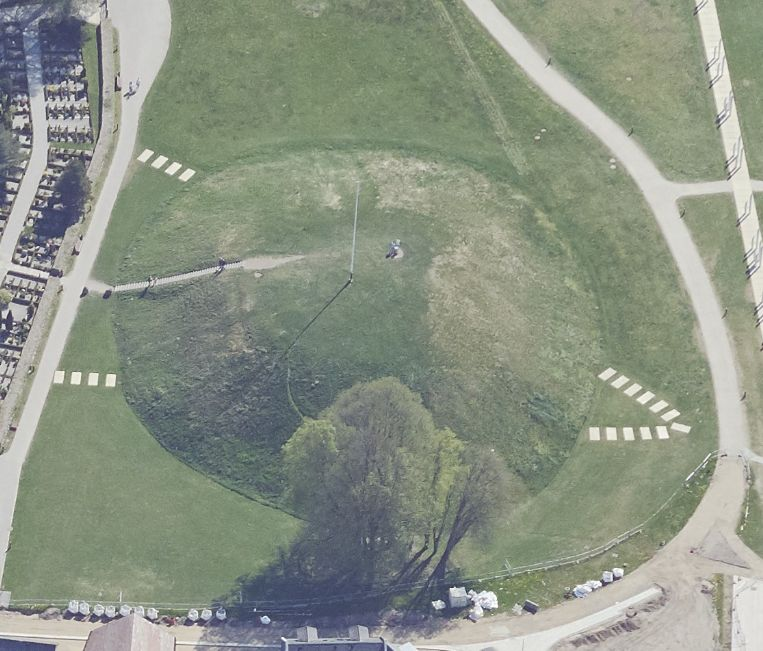
Über diese Webseite wird das - Urheber: StreamLive - vom Südhügel zur Ansicht und auch zum Download angeboten.
Um die beiden Grabhügel in
Jelling
ranken sich viele Geschichten. So erzählte man sich Mitte des
19. Jahrhunderts: Vor vielen Jahren war der Eingang zur Grabstube
Ein anderes Mal begannen die Ortsbewohner von
Jellinge, den
Grabhügel des Königs
zu untersuchen in der Absicht, Kostbarkeiten darin zu finden. Aber nachdem sie
ein gutes Stück hineingegraben hatten, stießen sie auf einen großen schwarzen
Hund und mussten die Arbeit sein lassen. Seitdem hat man nichts mehr
unternommen. Denn eine alte Weissagung berichtet, dass
Jellinge
verbrennen
sollte, wenn der Hügel
Quelle zu den beiden Geschichten: Jens Jacob Asmussen Worsaae (*14.03.1821 - 15.08.1885, Archäologe) - Et par ord om Gorms og Thyres Höie i Jellinge - Annaler for nordisk oldkyndighed: 1840/41 - S. 173
Dieser Schritt erfolgte dennoch im
Jahre 1861, als eine Untersuchung von
Frederik VII. (* 6.Oktober 1808 - 15. November 1863, von 1848 bis
zu seinem Tod
König von Dänemark)
angeordnet wurde, weil er
hoffte die Grabkammer von
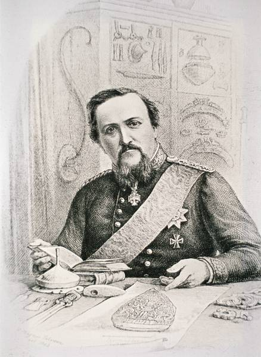
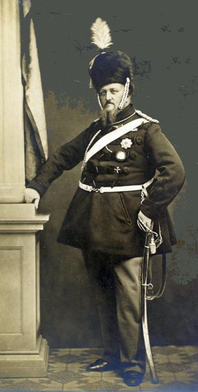
Bildquelle: Zeichnung von Magnus Petersen (*04.09.1827 - 01.02.1917, Archäologischer Zeichner und Restaurator) aus dem Jahr 1863. Sie zeigt den König in seinem Arbeitszimmer auf Schloss Christiansborg / Fotografie um 1860 - Königliche Bibliothek - zugeschnitten
Die erste Information dazu kam am 28.05.1861 durch einen Brief von C. F. Herbst (*07.04.1818 - 02.07.1911, Archäologe, Numismatiker und Museumsdirektor) an Jens Jacob Asmussen Worsaae (*14.03.1821 - 15.08.1885, dänischer Archäologe und Vorgeschichtler - Gemälde von 1875). Darin berichtet dieser, dass Christian Jürgensen Thomsen (*29.12.1788 - 21.05.1865, Altertumsforscher - Portraitgemälde von 1848) Kustos der so genannten Altnordischen Sammlung unter der Hand von den Plänen des Königs erfahren habe.
In dem königlichen Reskript - Silkeborg, Sonntag, 23. 06.1861 - heißt es dann (übersetzt): ... und somit ist es Unser Wille, dass der sogenannte Grabhügel
Im selben Sommer, um genau zu sein am 01.07.1861, begannen die Ausgrabungen wie vom König befohlen unter der Leitung von J. J. A. Worsaae in Gegenwart hochgestellter Fachleute. Prof. Ib Ibsen (*24.06.1801 - 12.05.1862, Anatom - Fotografie um 1860-63), Prof. Jacob Kornerup (*19.11.1825 - 09.03.1913, dänischer Archäologe und Zeichner - Fotografie um 1870), Justisraad C. F. Herbst (*07.04.1818 - 02.07.1911, Archäologe, Numismatiker und Museumsdirektor - Fotografie um 1875) und der Konservator Valdemar Frederik Ove Steffensen (*15.4.1836 - 20.01.1912 - Fotografie um 1890) waren ausgewählt worden.
Zahlreiche Minengänge von insgesamt über 34 Metern Länge wurden in 14 Tagen von Pioniersoldaten unter der Leitung von Ingenieur Magnus Frederik Emil Møller (*1820 - 05.06.1892) in den Hügel eingetrieben, aber ohne Ergebnis. Der Hauptminengang von 15,70 m Länge hatte eine Höhe von ca. 1,90 m und eine Breite von ca. 1,20 m. Außerdem wurden noch mehrere Bohrungen in den Hügel ausgeführt. Frederik VII. kam selbst mehrmals in Begleitung seiner 3. Ehefrau, Gräfin Louise Christine Danner (*21.04.1815 - 06.03.1874) vor Ort, so am 17. bis 19.07.1861, am 09.08.1861 und nochmals am 25./26.09.1861. Das Paar residierte auf Schloss Jægerspris auf Seeland.
Jacob Kornerup hat während seines Aufenthaltes in Jelling zahlreiche tolle Zeichnungen angefertigt, die sich glücklicherweise in den Archiven des Nationalmuseum in Kopenhagen / Nationalhistorisches Museum Schloss Frederiksborg bis heute erhalten haben. Hier eine auf den 11.08.1861 datierte Skizze, die die Situation vor Ort am Freitag, 09.08.1861, bei einem eintägigen Besuch des Königs wiedergibt.
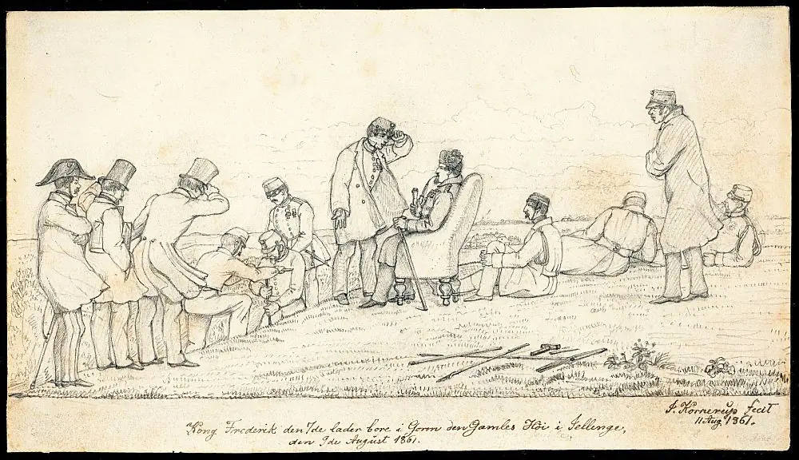
Bildquelle: Digitale Bildersammlung Nationalmuseum Kopenhagen - Frederik VII. überwacht die Bohrungen in König Gorms Hügel - Zeichnung vom 11.08.1861 - Original 29,6 x 16,6 cm - von Jacob Kornerup - Fotograf Arnold Mikkelsen - Lizenz: CC-BY-SA
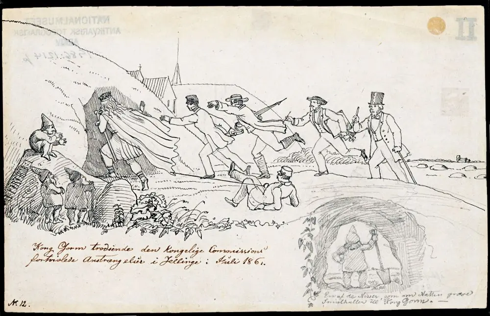
Diese tolle Zeichnung von ihm ist betitelt mit (übersetzt): "
Bildquelle: Digitale Bildersammlung Nationalmuseum Kopenhagen - König Gorm flüchtet vor den Ausgräbern - Zeichnung vom Juli 1861 - Original 21 x 13,4 cm - von Jacob Kornerup - Fotograf Arnold Mikkelsen - Lizenz: CC-BY-SA
Der Bergbaumeister/Pionier Møller wurde durch König Frederik VII. vor dem Eingang in den Südhügel für seine Arbeit am 19.06.1861 mit dem Orden "Dannebrogmann" ausgezeichnet. Die Berichte des Bergmannsmeisters an seine Vorgesetzten über den Fortschritt der Arbeiten trugen dazu bei, das Bild einer geplanteren und durchdachteren Untersuchung zu zeichnen, als man lange angenommen hatte.
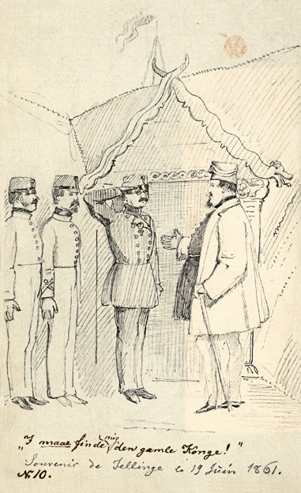
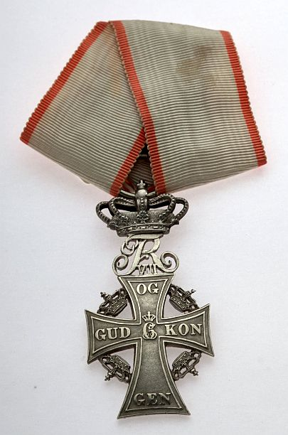
Bildquelle: Digitale Bildersammlung Nationalmuseum Kopenhagen - König verleiht Auszeichnung - von Jacob Kornerup - Lizenz: CC-BY-SA / Kreuz für das Ehrenabzeichen der Dannebrog-Männer
Eine Karte der Grabungen von 1861 in beiden Grabhügeln mit der Darstellung der einzelnen Minengänge wurde von Christian Frederik Herbst (*07.04.1818 - 02.07.1911, Archäologe, Numismatiker und Museumsdirektor) gezeichnet. Das Original hat sich nicht erhalten, aber diese Reinzeichnung, die 1864 in den Fundus des Altnordischen Museums in Kopenhagen (Vorläufer des Nationalmuseum) einging.


Quelle: Digitale Bildersammlung Nationalmuseum Kopenhagen - Karte der Grabungen von 1861 - von C. F. Herbst - Lizenz: Public Domain / Tafel VI (siehe unten) - Lizenz: CC-BY-SA
Diese Zeichnung war wiederum die Vorlage für die Tafel VI (siehe oben rechts) in dem 1875 veröffentlichten Buch von Jacob Kornerup (*19.11.1825 - 09.03.1913, dänischer Archäologe und Zeichner aus Roskilde) mit dem Titel "Kongehøiene i Jellinge og deres Undersøgelse efter Kong Frederik VII's Befaling i 1861". Weitere drei Planzeichnungen des Südhügels von Christian Frederik Herbst, eine Kopie von dessen von Jacob Kornerup sowie eine von Ludvig Frederik Both (*09.11.1823 - 02.01.1887, Schriftsteller und Zeichner), die heutzutage im Antikvarisk -Topografisk Arkiv in Kopenhagen verwahrt werden:

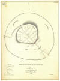

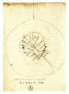

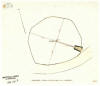
Quelle: Jens Vellev - Jelling, Sommeren 1861: Frederik 7. og J.J.A. Worsaaes udgravninger - 2012 - S. 62 / 71 / 84
Der Eingang zu den im Juli und August 1861 gegrabenen Minengängen im Südhügel / Gorms Hügel wurde von Jacob Kornerup zeichnerisch festgehalten.
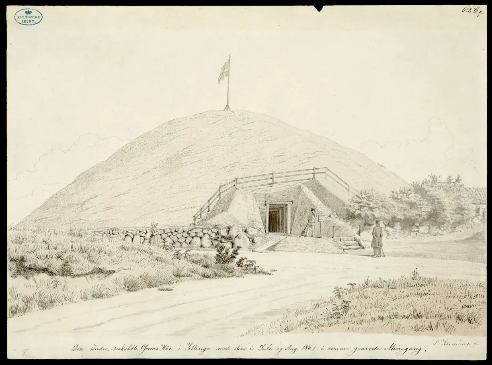
Quelle: Digitale Bildersammlung Nationalmuseum Kopenhagen - Zeichnung - von Jacob Kornerup - Lizenz: Public Domain
Der Eingang in den Minengang des Südhügels wurde mit einem sehr schön geschnitzten hölzernen Eingangsportal verziert. Auf der u.a. Zeichnung von Jacob Kornerup zwar am Zugang in den Nordhügel zu sehen, es war aber ursprünglich am Südhügel montiert gewesen.
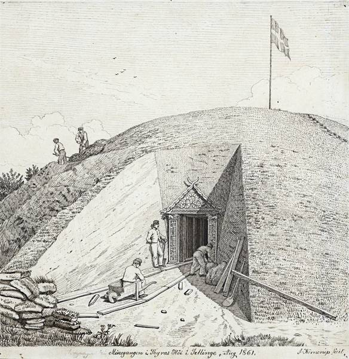
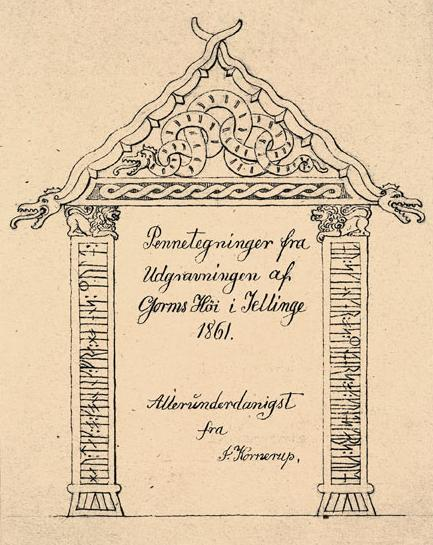
Quelle: Digitale Bildersammlung Nationalmuseum Kopenhagen - Portal am Nordhügel - von Jacob Kornerup - Lizenz: Public Domain / Portal - Runentext von Worsaae verfasst (links: von unten nach oben / rechts: von oben nach unten gelesen): "Hav tak, o konning! fra højens muld / du skænker os minder og kundskabs guld" (Übersetzt: "Danke, oh König! Aus der Erde des Hügels / Du gibst uns Erinnerungen und das Gold des Wissens" - in der Sammlung im Nationalhistorischen Museum auf Schloss Frederiksborg in Kopenhagen
Nach anderthalb Monaten harter Arbeit gab Worsaae die weiteren Arbeiten auf und kam zu dem Schluss, dass es trotz der Stein- und Holzfunde im Hügel keine Spur einer Grabkammer gab. Als man bei dieser Grabungskampagne Sicherheit erlangt hatte, dass der Südhügel leer war, begann man direkt mit der neuerlichen Ausgrabung des Nordhügels, der ja bereits 1820/21 und 1861 ergraben worden war. Der Südhügel wurde nochmals in den Jahren 1941 und 1942 durch Ejnar Dyggve (*17.10.1887 - 06.08.1961, Architekt, Archäologe) gründlich untersucht.
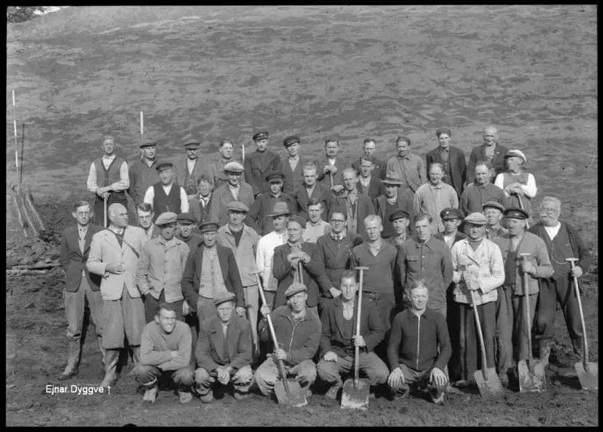
Bildquelle: Digitale Bildersammlung Nationalmuseum Kopenhagen - Unbekannter Fotograf - Ausgrabungsteam - Lizenz: Public Domain
Da man während der deutschen Besatzung im 2. Weltkrieg befürchtete, dass die Nazis in Jelling eigene Grabungen aufnehmen könnten, wollte man dieser Möglichkeit zuvorkommen. Bereits 1938 hatten Johannes Brøndsted (*05.10.1890 - 16.08.1965, Archäologe, Prähistoriker und Museumsdirektor) und Ejnar Dyggve eine Diskussion im Hinblick auf eine gründliche Untersuchnung des Südhügel angeregt. Erst 1941 gelang es dem damaligen Direktor des Nationalmuseums, nämlich Dr. Poul Nørlund (*04.11.1888 - 26.05.1951, Historiker, Archäologe, Direktor des dän. Nationalmuseums 1938-1951), über eine Bewilligung des staatlichen Beschäftigungsausschusses unter Beteiligung der Carlsberg-Stiftung die finanzielle Grundlage für diese sehr umfangreichen Arbeiten bereitzustellen. Der Südhügel wurde in der bislang umfangreichsten Ausgrabung in Dänemark von oben her bis zur Sohle ausgegraben und ein Schnitt bis nach den Seiten hin gelegt. Dabei wurde wiederum - nun wohl endgültig - festgestellt, dass er zu den leeren Grabhügeln - ein Kenotaph - der Eisenzeit gehörte. Zugleich wurden aber interessante neue Beobachtungen über seinen Aufbau gemacht.
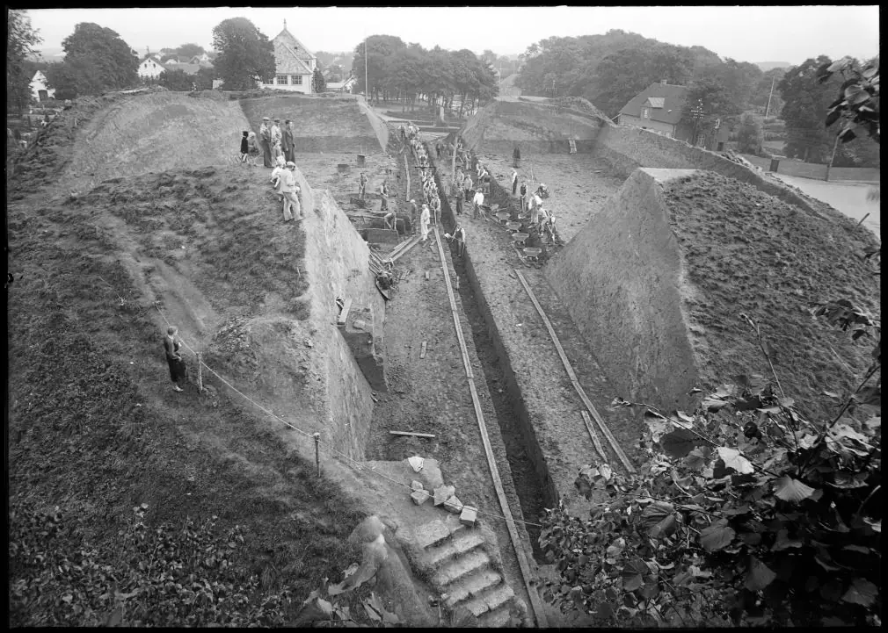
Bildquelle: Digitale Bildersammlung Nationalmuseum Kopenhagen - Unbekannter Fotograf - Aufnahme 1941 - Lizenz: Public Domain
Die tägliche Belegschaft bei diesen Ausgrabungen betrug etwa 45 Mann. Dennoch dauerte es fast vier Monate, bis man den Boden des Hügels erreichte. Auf dem Weg dahin wurden Bruchstücke von Wagen, Tragen und Spaten verschiedener Art aus Eichenholz gefunden.
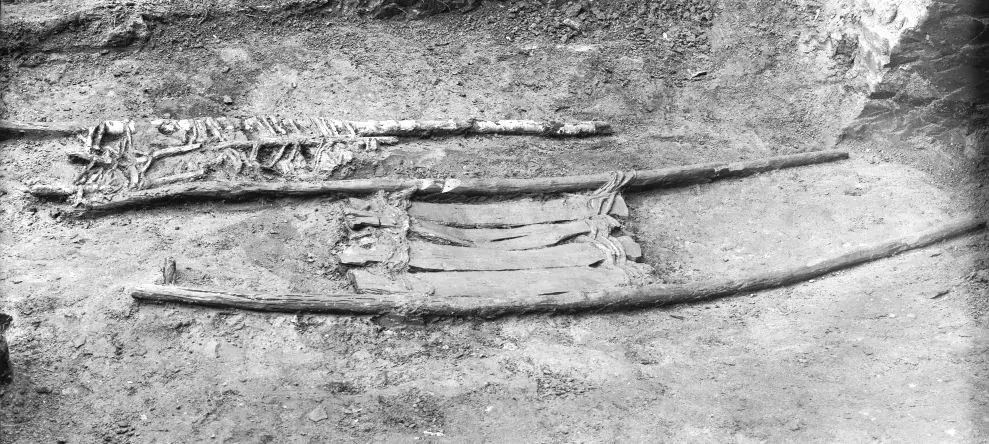
Bildquelle: Digitale Bildersammlung Nationalmuseum Kopenhagen - Unbekannter Fotograf - Zwei Tragen - Lizenz: Public Domain - Foto von mir zugeschnitten
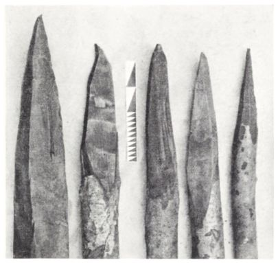
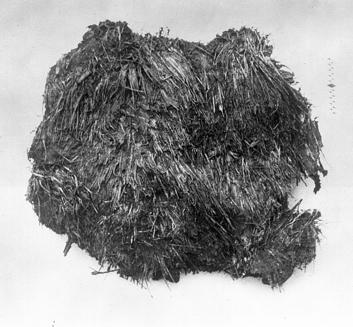
Gut erhaltene angespitzte Äste mit Rinde - Ejnar Dyggve - Jelling Kongehøje - Udgravningen 1941 - Fra Nationalmuseets Arbejdsmark - 1943 - S. 25 / Digitale Bildersammlung Nationalmuseum Kopenhagen - Gut erhaltene Grassode - Unbekannter Fotograf - Lizenz: Public Domain

Tafel VIII - einer Auswahl von Holz- und Eisenfunden aus dem Südhügel - Zeichnung von Jacob Kornerup - Lizenz: CC-BY-SA - aus dem Buch Kongehøiene i Jellinge og deres Undersøgelse efter Kong Frederik VII's Befaling i 1861"
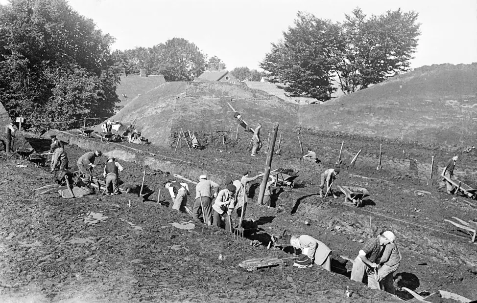
Bildquelle: Digitale Bildersammlung Nationalmuseum Kopenhagen - Unbekannter Fotograf - Arbeitseinsatz - Lizenz: Public Domain
Die Arbeiten dauerten bis in den Oktober 1941 hinein und wurden erst im Sommer des folgenden Jahres abgeschlossen.
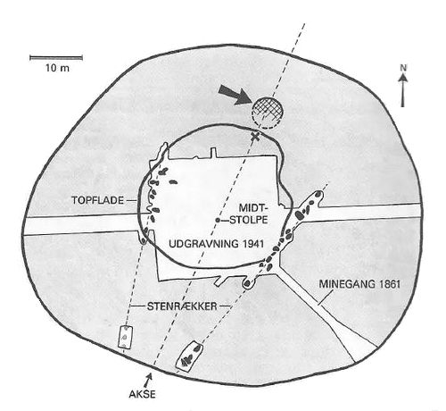
Quelle: Ejnar Dyggve - Jelling Kongehøje - Udgravningen 1941
Der Leiter der Ausgrabung, Ejnar Dyggve, schätzte, dass ca. 135.000 Schubkarren Erde aus dem Hügel entfernt wurden. Trotz dieser enormen Anstrengung wurde weder im Mittelteil des Hügels noch unter ihm ein Grab gefunden. Andererseits wurden u.a. komplizierte Konstruktionen aus Holz gefunden, die offenbar beim Bau des Hügels eine Rolle gespielt haben.
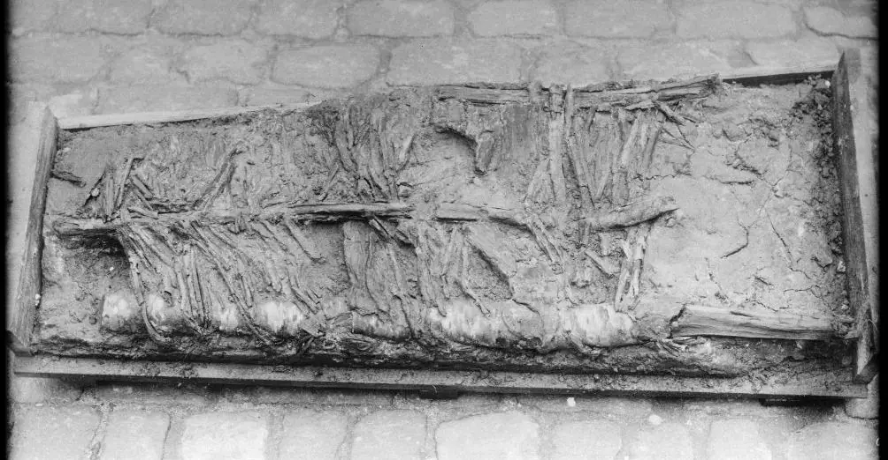
Bildquelle: Digitale Bildersammlung Nationalmuseum Kopenhagen - Unbekannter Fotograf - Flechtwerkfund - Lizenz: Public Domain - Foto von mir zugeschnitten
Über den u.a. grafischen Querschnitt wird der Aufbau des Grabhügels deutlich, der nicht in einem Arbeitsgang erbaut wurde. Der Hügel wurde nämlich über mehrere Jahre immer wieder erhöht. In der ersten Phase "I" wurden in heidnischer Zeit die abgeschälten Grassoden mit der Grasseite nach unten aufeinandergestapelt, wie man bei einer Mauer Stein auf Stein legt. Die Grassoden wurden sicherlich mit Karren herangeführt und dann mit den o.a. hölzernen Tragen aus Flechtwerk usw. direkt an den Ort gebracht, wo sie verlegt wurden. Der Mittelpfosten um den der Hügel ringsherum aufgebaut wurde, war länger als die Bauphase. Danach wurde der Hügel irgendwann auf die Phase "II" erhöht. Für diese zweite Bauphase war ein neuer Mittelpfosten errichtet worden. Danach ruhten die Arbeiten lange, weil durch die Forschungen nachgewiesen werden konnte, dass auf den dort verlegten obersten Soden zwischenzeitlich Gras nachgewachsen war. Erst danach wurde er in der Phase "III" auf seine endgültige Höhe gebracht.
Zunächst wurde also für den Gras- und Heidetorfhügel rund um den Mittelpfosten ein Kern angelegt. Dieser Hügelkern war ca. 3 Meter hoch und hatte einen Durchmesser von ca. 50 Meter. Auf dem Kern wurde an der Nordwestseite eine Holzkonstruktion errichtet, die als Bauskelett bzw. Vorlage diente, als die nächste Torfschicht verlegt werden musste. Nach einer kurzen Pause, während der die Holzkonstruktion gebaut wurde, wurde die zweite Phase des Hügels errichtet. Es wurden noch mehr Soden hinzugefügt und der Hügel war am Ende ca. 7 Meter hoch mit einem Durchmesser von ca. 60 Meter. Nach einer weiteren Baupause wurde die dritte Phase errichtet, in der der Hügel eine Höhe von 9 Metern und einen Durchmesser von 65 Metern erreichte. Am Ende wurde der Hügel mit einer Erdschicht bedeckt, wodurch der Südhügel seine endgültige Größe von etwa 10 Metern Höhe und ca. 70 Metern Durchmesser erhielt. Der Südhügel besteht daher fast ausschließlich aus Gras und Heidetorf. Es wird geschätzt, dass etwas mehr als zwei Millionen Soden für den Hügel verwendet wurden.
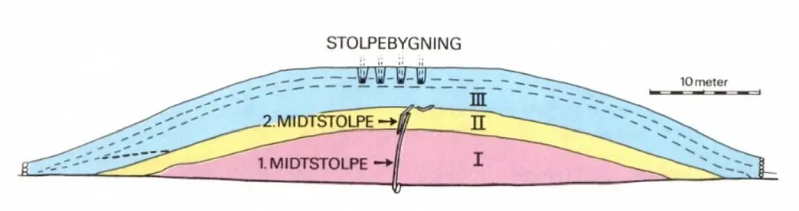
Quelle: Ejnar Dyggve - Jelling Kongehøje - Udgravningen 1941 - Übersetzung von unten nach oben: 1. Mittelpfosten / 2. Mittelpfosten / Pfostengebäude
Auf dieser Fotografie der Ausgrabung kann man zum einen den Mittelpfahl, Teile der Bautasteinreihe - Infos siehe unten - aber auch den Minenstollenzugang von 1861 (dunkle Erde links) ausmachen.
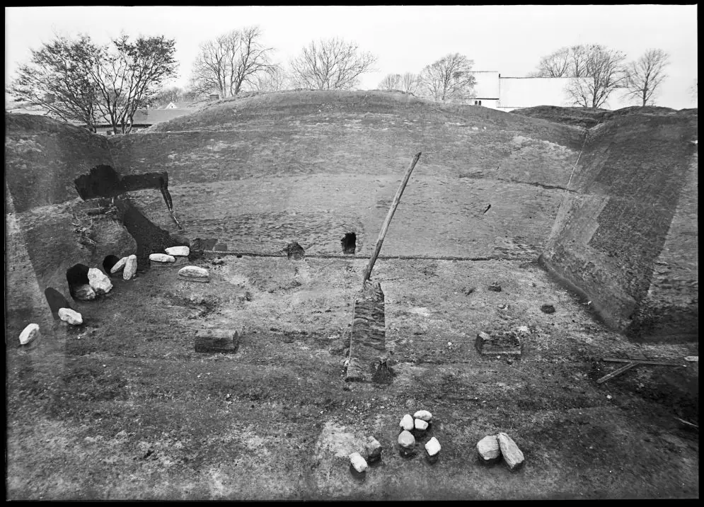
Bildquelle: Digitale Bildersammlung Nationalmuseum Kopenhagen - Unbekannter Fotograf - Aufnahme 1941 - Lizenz: Public Domain
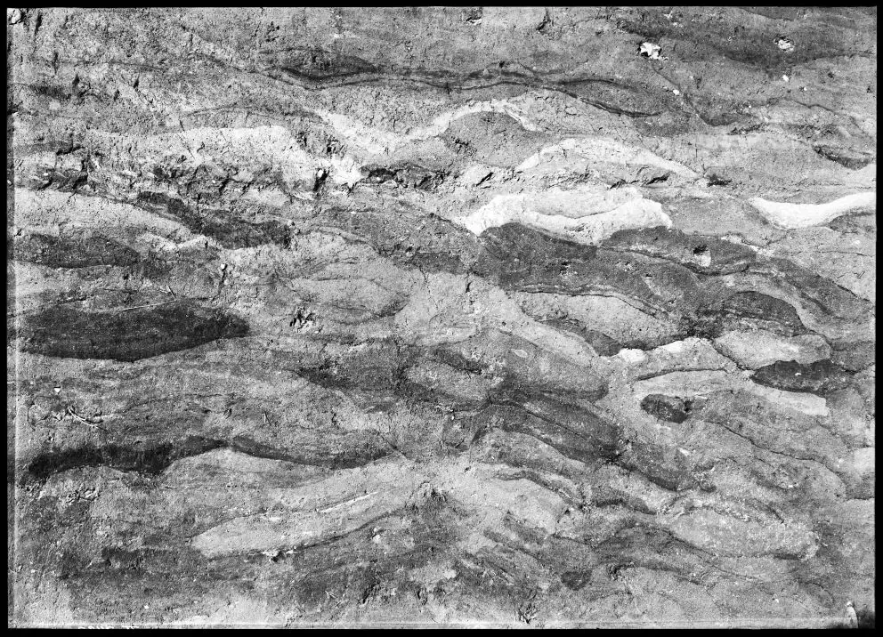
Bildquelle: Digitale Bildersammlung Nationalmuseum Kopenhagen - Unbekannter Fotograf - Grassodenaufbau - Lizenz: Public Domain
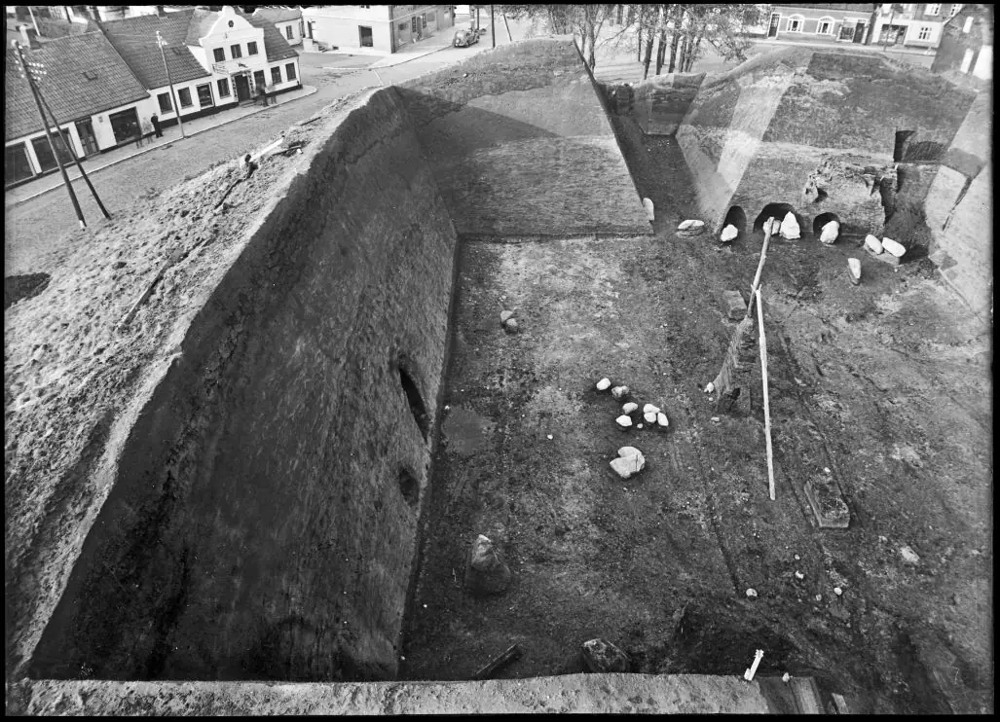
Bildquelle: Digitale Bildersammlung Nationalmuseum Kopenhagen - Unbekannter Fotograf - Aufnahme 1941 - Lizenz: Public Domain
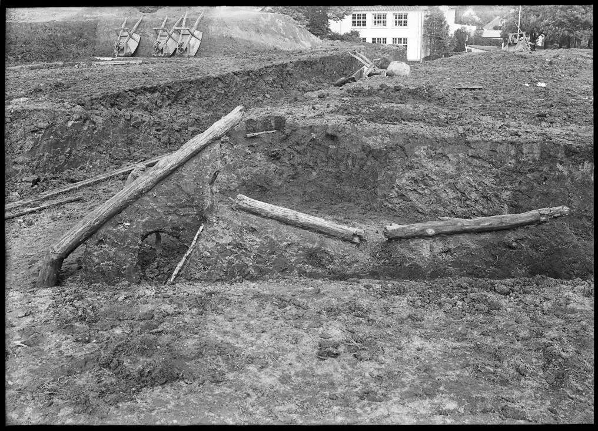
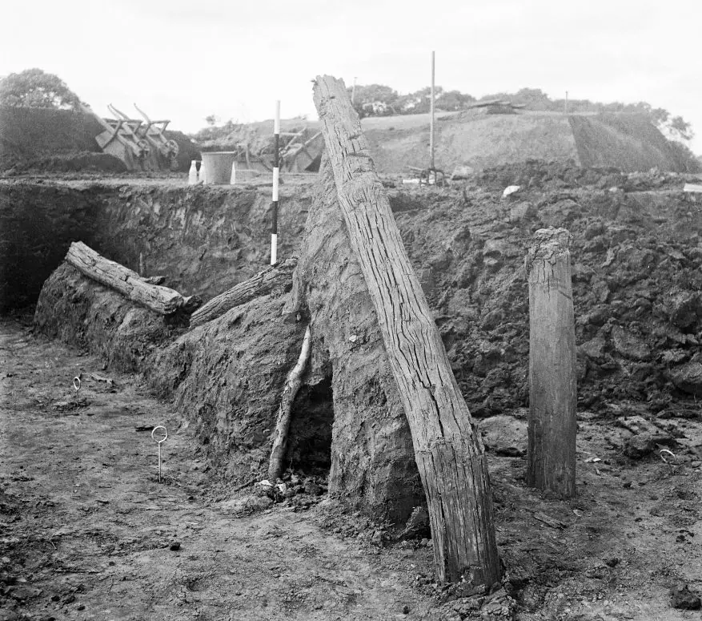
Bildquelle: Digitale Bildersammlung Nationalmuseum Kopenhagen - Unbekannter Fotograf - 2. Mittelpfosten von wsw gesehen / Beide Mittelpfosten von nw - Lizenz jeweils: Public Domain
Halbwegs oben im Hügel lag eine zeltähnliche, über 20 m lange Konstruktion von dürftigen Eichen- und Birkenstämmen von zweifelhafter Bedeutung, vielleicht eine Schablone als Hilfe beim Aufbau des Hügels.

Bildquelle: Digitale Bildersammlung Nationalmuseum Kopenhagen - Unbekannter Fotograf - Aufnahme 1941 - Lizenz: Public Domain
Auf dem obigen Foto sieht man Ejnar Dyggve (Herr im hellen Anzug mit Notizblock) und vor ihm befindet sich der junge Herr Carl Johan Becker (*3.9.1915 - 3.6.2001, dänischer Archäologe). Dieser fand das Runensteinbruchstück - Jelling 3 - im Jahr 1964 mit Magister Olfert Voss (*02.04.1926 - 07.02.2014, dänischer Archäologe) im Zusammenhang mit archäologischen Untersuchungen in der Mauer der Kirchhofeinfriedung von Jelling. Das unten stehende Foto zeigt diese Konstruktion bei fortgeschrittener Ausgrabung.
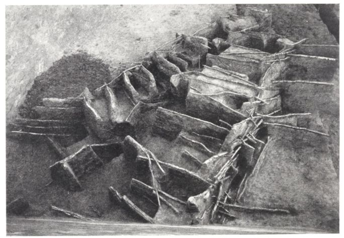
Ejnar Dyggve - Jelling Kongehøje - Udgravningen 1941 - Fra Nationalmuseets Arbejdsmark - 1943 - S. 26
Bei diesen Untersuchungen in den 1940er Jahren war die Feststellung von besonderer Bedeutung, dass man unter dem Hügel, auf der alten Oberfläche stehend, zwei Reihen von Bautasteinen fand, deren Verlängerung nach Süden außerhalb des Hügelfußes einen spitzen Winkel gebildet haben würde. Die Bautasteine waren mit 2 m Zwischenraum aufgestellt, sind etwa 1,50 m hoch und waren mit Flechten und Moosen bewachsen gewesen, die beweisen, dass sie etwa 20 bis 30 Jahre lang unbedeckt gestanden hatten, genau die Zeit zwischen der Errichtung der beiden Runensteine, deren Zeugnis bei der Deutung der Monumente von Jelling als Ganzes zugrunde gelegt werden muss.
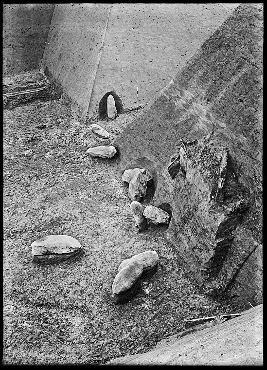
Bildquelle: Digitale Bildersammlung Nationalmuseum Kopenhagen - Unbekannter Fotograf - Aufnahme 1941 - Lizenz: Public Domain
Ejnar Dyggve hat den Vorschlag gemacht, diese Bautasteine als einen Teil eines ansehnlichen dreieckigen "heidnischen Heiligtums von Bautasteinen" (Bauta-Vi) zu deuten, das vom Nordhügel in südlicher Richtung ausging, eine Deutung, die durch die sonstigen Vorzeitdenkmäler Dänemarks nicht bestätigt wird.


Bildquelle: Ejnar Dyggve - Jelling Kongehøje - Udgravningen 1941 - Fra Nationalmuseets Arbejdsmark - 1943 - S. 28 und 27 (I und II = heidnisch - III - V = christlich).
Wie man heute bekanntlich weiß, handelt es sich vielmehr um den Teil einer gewaltigen Schiffssetzung deren Verlauf heutzutage durch weiße Betonplatten wiedergegeben wird - siehe auch oben.
Eine
andere spannende Entdeckung bei der Ausgrabung im Jahre
1941 war die
Feststellung von Fundamenten eines Holzgebäudes oben in der Kuppe des südlichen
Hügels. Hier fand man zehn schwere viereckig zurechtgehauene Eichenpfosten, die
in einem rechteckigen Grundplan von 6,00 x 4,50 m Ausmaß mit je vier Pfosten
auf den Längsseiten und drei an den Enden aufgestellt waren. Darunter waren
waagrechte Bretter angebracht, die verhindern sollten, dass sie im Hügel
einsanken, und ihre Gleichzeitigkeit mit dem letzten und abschließenden Aufbau
wahrscheinlich machen. Die Pfosten wurden als Teil eines Wehr-
und Wachturms oder eines Glockenturms gedeutet,
aber auch als Reste eines Grabhauses auf der
Kuppe des Hügels, schlechthin der Grabkammer, in der
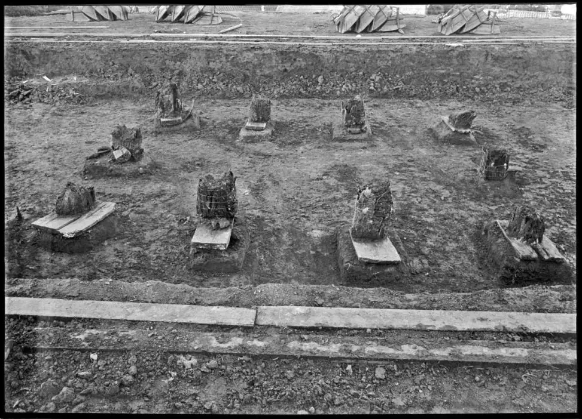
Bildquelle: Digitale Bildersammlung Nationalmuseum Kopenhagen - Unbekannter Fotograf - Pfostenbefund - Foto oben - Foto unten - Lizenz jeweils: Public Domain
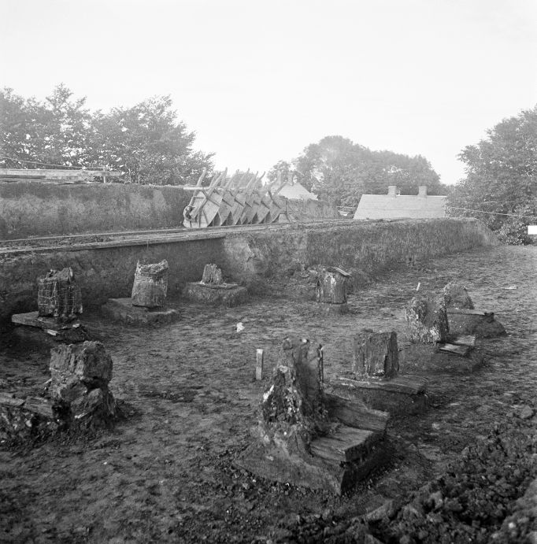
Die Eichenholzreste ermöglichten inzwischen eine dendrochronologische Datierung und darüber eine verlässliche Altersbestimmung. Demnach wurden die Eichen für dieses Gebäude etwa 1150 geschlagen und haben demnach nichts mit dem eigentlichen Hügel der Wikingerzeit zu tun.
Im August / September 2009 führten Mitarbeiter der Abteilung für Geologie und Geographie der Universität Kopenhagen und des Nationalmuseums eine Reihe von Bohrlöchern in den beiden Hügeln in Jelling durch. Sieben Bohrlöcher im Nordhügel und vier Bohrlöcher im Südhügel. Die Bohrlöcher wurden auf der Grundlage der Erkenntnisse aus den älteren Ausgrabungen platziert, so dass Störungen vermieden wurden, mit Ausnahme von zwei Bohrlöchern, die in den zentralen Ausgrabungsbereichen jedes Hügels angebracht wurden. Ziel war es, den Bau der Hügel und die Erhaltungsbedingungen für Pollen und Pflanzenreste zu untersuchen und Daten zu sammeln, die Aufschluss über die Landschaft in und um Jelling in der Wikingerzeit geben könnten.
Auf dem Südhügel wurden wie bereits erwähnt also vier Bohrungen durchgeführt, eine am Nord- und Südhang, eine in der Mitte von Dyggves Grabung und eines oben am Nordhang. Aufgrund der umfassenden Abtragung des Südhügels während Dyggves Grabung sind nämlich nur noch die Hangzonen original und ungestört. Die Bohrungen wurden mit einer handbetriebenen Kammerbohrmaschine durchgeführt, die für Bohren in steinigem Boden entwickelt wurde. Der Durchmesser des Bohrers betrug 7 cm und bestand aus einem Handgriff, einem Bohrkopf und mehreren 1 m langen Verlängerungsstangen. Die Bohrarbeiten konnten man mit einem Kombibohrer bis 5 m durchführen, danach musste der Bohrer beim Heben und Senken des Bohrers geteilt und zusammengebaut werden. Dies liegt daran, dass die Bohrstangen sich sonst verbogen hätten. An jedem Bohrloch wurde eine Probe von üblicherweise 10-15 cm entnommen. Das mit 9,40 m tiefste Bohrloch wurde oben auf dem Südhügel gebohrt. Es waren 71 Auf- und Abstiege erforderlich. Alle Bohrlöcher erreichten den verdeckten Untergrund aus prähistorischer Zeit und landeten im Untergrund, der gelbbraun und gut erkennbar war. Zwei Bohrlöcher wurden unmittelbar nach Abschluss der Bohrungen nicht abgedeckt, nämlich ein 7,5 m tiefes Bohrloch an der Oberfläche westlich der Grabung von Frederik VII. im Nordhügel und ein 9,4 m tiefes Bohrloch am Nordrand des Südhügels. In diesen beiden Bohrlöchern wurde der Grundwasserstand im folgenden Zeitraum jeden oder jeden zweiten Tag gemessen, und zwar im Nordhügel vom 27. August bis 11. September 2009 und im Südhügel vom 1. September bis 9. September 2009.
Die tiefste Bohrung reichte bis zu einer Tiefe von 9,40 m, gemessen von der Spitze des Südhügels. Alle Bohrungen erreichten die alte Oberfläche aus der Wikingerzeit und endeten unter der Erde. Unterwegs wurden Proben aus bedeutenden Schichten entnommen, teils für chemische und physikalische Bodenanalysen und 14C-Datierungen, teils für Makrofossilanalysen und Pollenanalysen. Manche Gräser aus den Bohrproben war bei ihrer Entnahme noch grün, verfärbte sich aber an der Luft in kürzester Zeit braun.
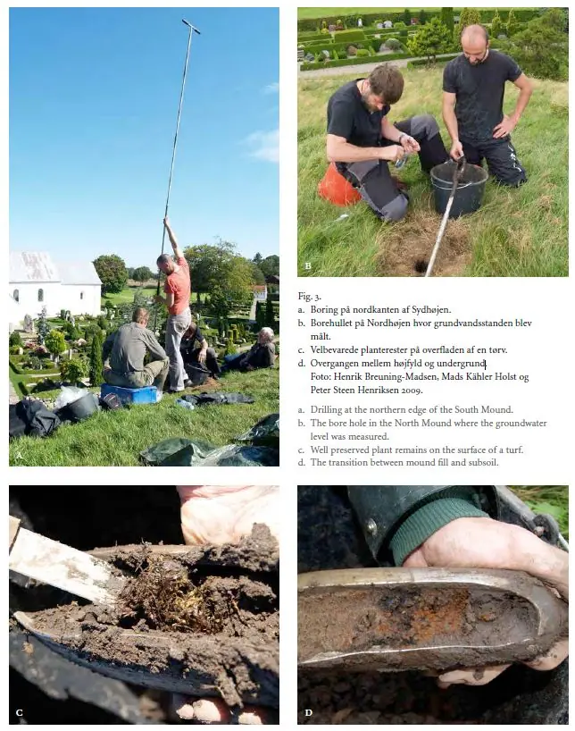
Übersetzung Legende: a. Bohrung an der Nordkante des Südhügels / b. Bohrloch auf dem Nordhügel in dem der Grundwasserspiegel gemessen wurde / c. Gut erhaltene Pflanzenreste auf der Oberfläche eines Grassoden / d. Der Übergang zwischen Hügelerde und Untergrund
Quelle:
Brønden på toppen af Nordhøjen i Jelling - von Henrik
Breuning-Madsen, Mads Kähler Holst und Peter
Steen Henriksen - Nationalmuseets Arbejdsmark 2010
- S. 197 - abgerufen und hier eingefügt: 29.11.2023
Die gut erhaltenen Überreste organischen Materials
wie Samen, Blätter und Zweige
jeder Probe wurden unter dem Mikroskop gezählt, und die vorläufigen Ergebnisse
der Bohrungen zeigen, dass es sich um eine sehr einheitliche Art handelt.
Überall im Hügel wurde mehr oder weniger die gleichen
Grassoden verwendet, was eine sehr homogene Zusammensetzung
ergibt. Die in den Soden gefundenen Samen und andere
Pflanzenreste zeigen, dass
es sich dabei eindeutig um Heidepflanzen und insbesondere um
Heidekraut handelt. Ging man früher davon aus, dass die Soden
für den Hügelbau aus den Heideflächen im Einzugsgebiet eingebracht wurde,
scheint dies nach den vorläufigen Ergebnissen der Analysen nun nicht mehr der
Fall zu sein. Allen Berichten zufolge wurden die Soden unmittelbar in der Nähe
der Hügel abgebaut, da der Boden in den Soden ziemlich lehmig war, genau wie
der Untergrund in
Jelling.
Die Soden wurden daher eher in der näheren Umgebung und nicht in der
Heide abgebaut. Es vermittelt ein etwas anderes Bild der Landschaft
rund um
Jelling,
als man es sich zunächst vorstellen würde. Normalerweise wäre dieser fruchtbare
Bodentyp im Gegensatz zu den Sandmooren weiter westlich als
Ackerland kultiviert worden. Die Zusammensetzung
der Soden lässt jedoch darauf schließen, dass sich um
die Hügel herum große offene und unbewirtschaftete Heidestücke
befanden, die dann zerschnitten und in die Hügel gelegt wurden.
Quelle:
Jellingprojektet -
Boringer i Nord- og Sydhøjen - von Sofie Drotner
und Anne Pedersen - 2009 /
Boreprøver fra højene - von Mads Dengsø Jessen - vom
26.02.2010
Mein erster Besuch in Jelling war im Sommer 1983 im Rahmen meines 1. Sommerurlaubes mit 23 Jahren. Seither bin ich von diesem Ort fasziniert und habe ihn unzählige Male besucht. Bei meinem letzten Aufenthalt habe ich am 18.06.2022 diese Fotos rund um den Südhügel aufgenommen:
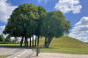 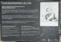 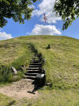 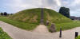 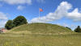 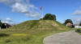 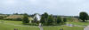


Informationen / Literaturhinweise:
Zeitungsartikel: Berlingske Politiske og Avertissementstidende - Nr. 154 - vom 05.07.1861 - "Udgravning af Kong Gorms Hoi i Jellinge" - Autor: J. J. A. WorsaaeZeitungsartikel: Berlingske Politiske og Avertissementstidende - Nr. 234 - vom 07.10.1861 - "Kongehøiene i Jellinge" - Autor: J. J. A. Worsaae
Hans Kjær - Kongehøjene i Jelling - Vejle Amts Aarbøger 1913 - S. 125 - 170
Sarauw, Georg F. L. - Kongehøjene og Runestenene i Jelling - Aarbøger for nordisk oldkyndighed og historie, Band 16, 1926, S. 245-280
Knudsen, Fr. - Jellinghøjenes Frigørelse - Vejle Amts Aarbøger 1930 - S. 214 - 218
Wammen, J. P. - Kongehøjene i Jelling i historisk belysning - Vejle Amts Aarbøger 1931 - S. 1 - 19
Hermansen, Victor - Af en Oldgranskers Breve 1848-1885 - 1938 (Briefverkehr von J. J. A. Worsaae, darin diverse Zeichnungen von Jacob Kornerup)
Jellingprojektet 1941 - Udgravning af Sydhøjen og fund af flere bautasten
Ejnar Dyggve - Jelling Kongehøje - Udgravningen 1941 - Fra Nationalmuseets Arbejdsmark - 1943 - S. 19-31
Christiansen, T. E. - Bygningen på søndre Jellinghøj - Kuml 24 - 1975 - S. 163172
Christensen, Tage E. - Bygningen på søndre Jellinghøj. En berigtigelse - Kuml 31 - 1983 - S. 279-283
Christensen, Kjeld / Krogh, Knud J. - Jelling-højene dateret - Nationalmuseets Arbejdsmark 1987 - S. 223 - 231
Henrik Breuning-Madsen, Mads Kähler Holst und Peter Steen Henriksen - Brønden på toppen af Nordhøjen i Jelling - Nationalmuseets Arbejdsmark 2010 - S. 192 - 203
Steen Hvass - Jelling Monumenterne deres historie og bevaring - 2011
Jens Vellev - Jelling, Sommeren 1861: Frederik 7. og J.J.A. Worsaaes udgravninger - 2012Jelling, sommeren 1861: Frederik 7. søger efter den gamle konge - Internetseite von www.videnskab.dk
Anne Pedersen - Jelling im 10. Jahrhundert ‒ Alte Thesen, neue Ergebnisse - 2014 - Die Wikinger und das Fränkische Reich. Identitäten zwischen Konfrontation und Annäherung, S. 275-295
Internet Artikel "Sydhøjen i Jelling, ca. 970" - Verfasser: Adam Bak - Aarhus Universität - https://danmarkshistorien.dk/
Jellingprojektet - 1861 - Den kongelige udgravning i Sydhøjen og Nordhøjen - von Sofie DrotnerJellingprojektet - 1941 - Udgravning af Sydhøjen og fund af flere bautasten - von Sofie Drotner
Jellingprojektet - Revision og dokumentation af årringsdateringer fra Jelling - von Kjeld Christensen
Jellingprojektet - 2009 - Boringer i Nord- og Sydhøjen - von Sofie Drotner und Anne Pedersen
Jellingprojektet - Boringer i Nord- og Sydhøjen 2009 - Henrik Breuning-Madsen / Charlie Christensen und Mads Kähler Holst